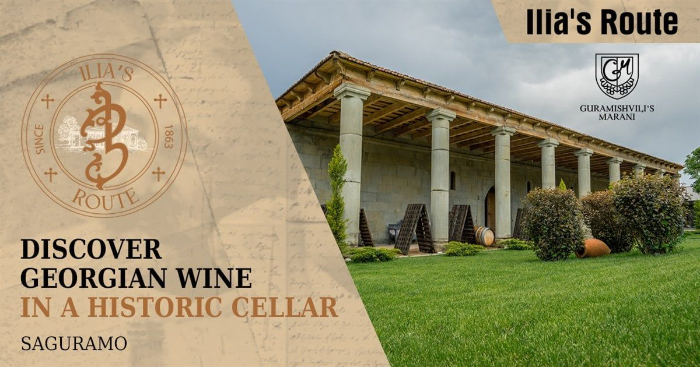
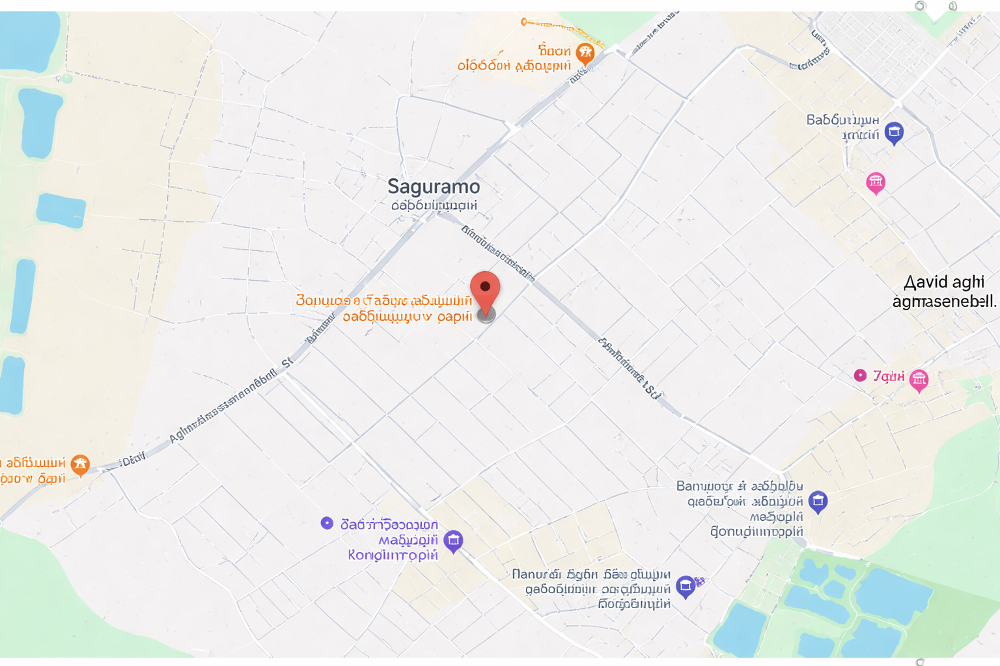

.png)
 ქართული ▾
ქართული ▾
 ქართული
ქართული English
English.png) ქართული ▾
ქართული English
ქართული ▾
ქართული English

„გურამიშვილის მარანი“ საგურამოში, ჯვრის მონასტრიდან 10 წუთის სავალ გზაზე მდებარეობს. მისი ისტორია მე-19
საუკუნის პირველი ნახევრით თარიღდება. მარანს კულტურული მემკვიდრეობის ძეგლის სტატუსი აქვს. მისი
უნიკალურობა იმაშია, რომ საუკუნის წინ, აქ, ილია ჭავჭავაძე თავად წურავდა ღვინოს, დღეს კი, მსგავსი გამოცდილების
მიღება, თითოეულ სტუმარს შეუძლია.
ჩვენი კონცეფციით ღვინის ტურიზმის ისეთ ფორმას ვქმნით, რომელიც მეხსიერებაში რჩება არა მხოლოდ გემოთი,
არამედ ღირებულებებით. „ილიას გზა“ - არის შემეცნებითი, მრავალფეროვანი ტური, რომელიც აერთიანებს ისტორიას და
ღვინის კულტურას. აქ ყოველ დეტალს სიმბოლური დატვირთვა და შინაარსი აქვს.
რა დაგხვდებათ ჩვენთან სტუმრობისას?
* სომელიე-გიდის მიერ ჩატარებული ტური
* ისტორიული მარანი, ილიას ქვევრები, ღვინის სარდაფი და საწარმო
* ღვინის დეგუსტაცია საწარმოში (ქართლის ენდემური ყურძნის ჯიშების ღვინო)
* ბოთლის ღვინის დეგუსტაცია
* ფოტო ზონა და პერსონალური სუვენირები
* ღვინის დეგუსტაცია ვენახში
(ბილეთის კატეგორიის შესაბამისად)
* ქართული კულინარიული მასტერკლასი
(ბილეთის კატეგორიის შესაბამისად)
* ქართული სუფრა სიმღერითა და ცეკვით
(სტუმარს რესტორნის ფასდაკლების ვაუჩერი გადაეცემა)
„გურამიშვილის მარნის“ გამოცდილება იწყება სომელიე-გიდთან შეხვედრით და გრძელდება მრავალფეროვანი
აქტივობებით - ვიზუალური ანიმაცია, მარნის მაკეტი, ქვევრები, ღვინის სარდაფი, საწარმო, დეგუსტაცია, სურვილისამებრ
- ვენახებში სტუმრობა & დეგუსტაცია, კულინარიული მასტერკლასები და ტრადიციული სუფრა ცოცხალი სიმღერითა და
ცეკვით. ყოველი სტუმარი იღებს პერსონალურ რეკომენდაციებს დეგუსტაციისას და აქვს შესაძლებლობა შეიძინოს
„გურამიშვილის მარნის“ ქართლის ენდემური ყურძნის ჯიშის ღვინო როგორც სტანდარტული, ისე სპეციალური ეტიკეტით.
ტური ხელმისაწვდომია ქართულ, ინგლისურ და სხვა ენებზე.
დეტალების დასაზუსტებლად, გთხოვთ, დაუკავშირდეთ ჩვენს სომელიეს: +995 591 55 29 68
დამატებით ინფორმაციას მარნის და ტურის შესახებ ნახავთ აქ: https://www.facebook.com/share/v/1EfNji9ryw/
ბილეთების კატეგორიები:
სტუდენტებისთვის (სტანდარტული) - 25 ლარი
უფროსებისთვის (სტანდარტული) - 35 ლარი
ბოთლის ღვინის დეგუსტაცია - 55 ლარი
ტური კულინარიული მასტერკლასებით - 65 ლარი
ტური ვენახებში ღვინის დეგუსტაციით - 155 ლარი
ბილეთის შეძენის შემდეგ აუცილებელია ორგანიზატორთან დაკავშირება ვიზიტის დასაჯავშნად, ნომერზე - +995 591 55
29 68
მარნის მუშაობის საათები: 12:00 – 18:00 სთ.
საგურამო

გურამიშვილის მარანი
